62 项扫描：58 通过，4 项视觉比较失败。用户已整批认可四项变化；全量门禁补充发现一项整页旧基线，亦已获认可。五项获批基线已更新并通过复验，阈值未变，其余基线保持原版。
已认可：工作台删减，新增系统管理分组及其引起的展开导航、收缩侧栏浮层定位变化。其余既有视觉比较通过原基线。
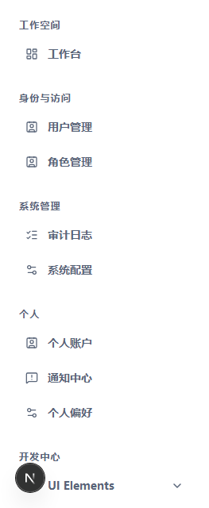
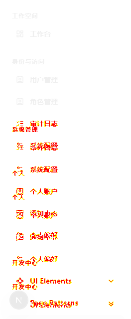
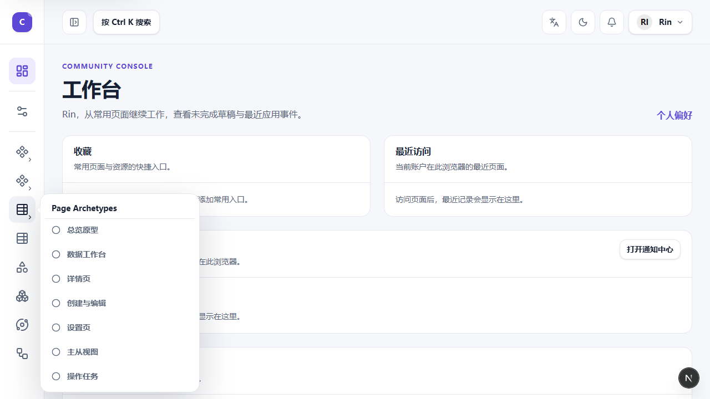
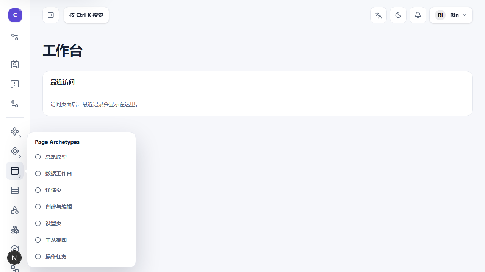
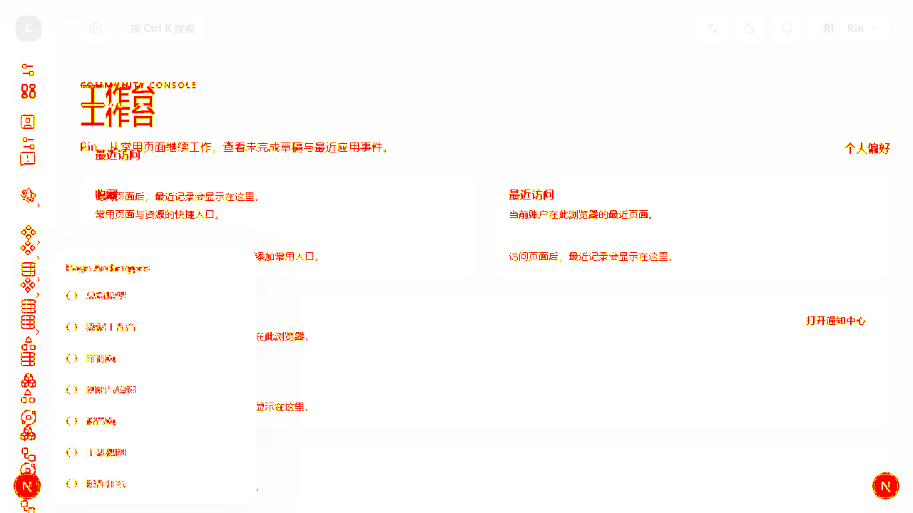
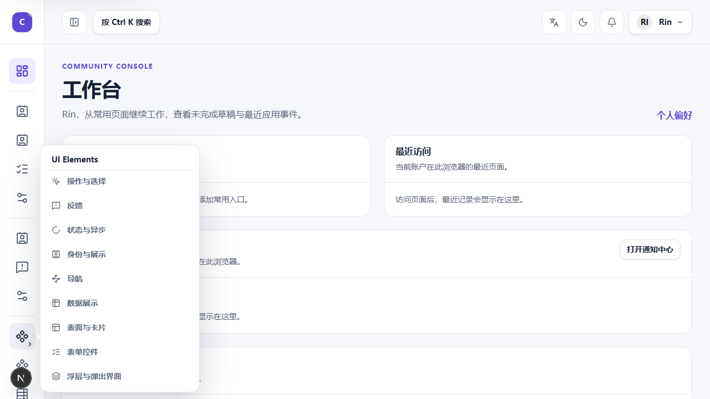
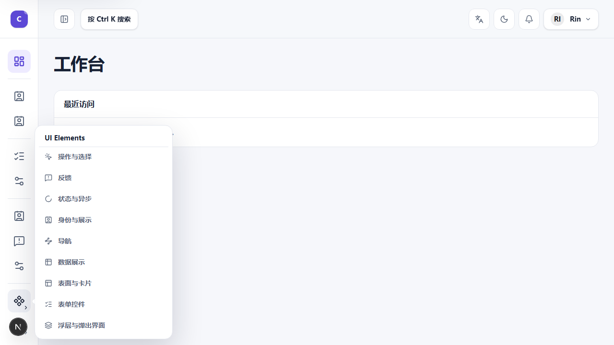
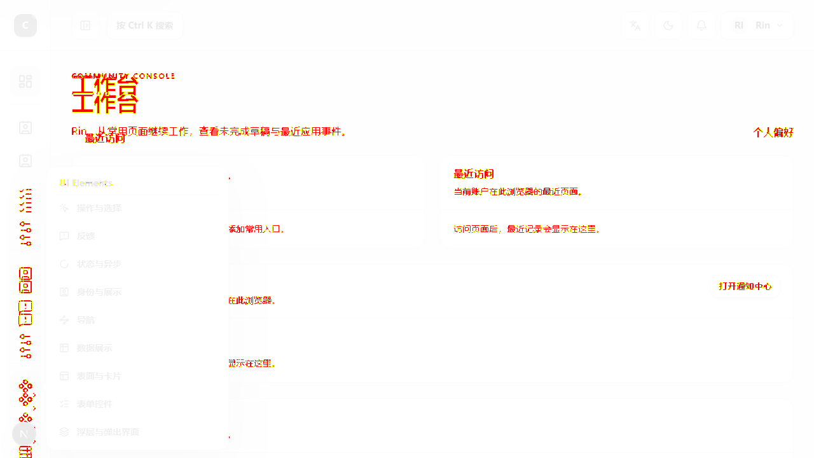
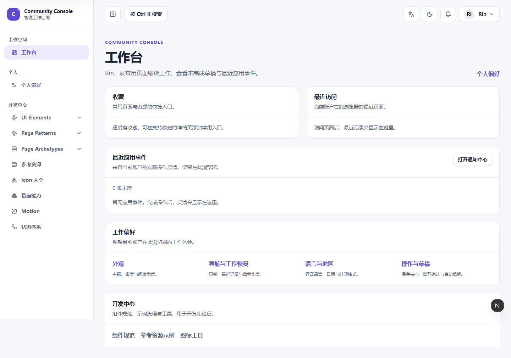
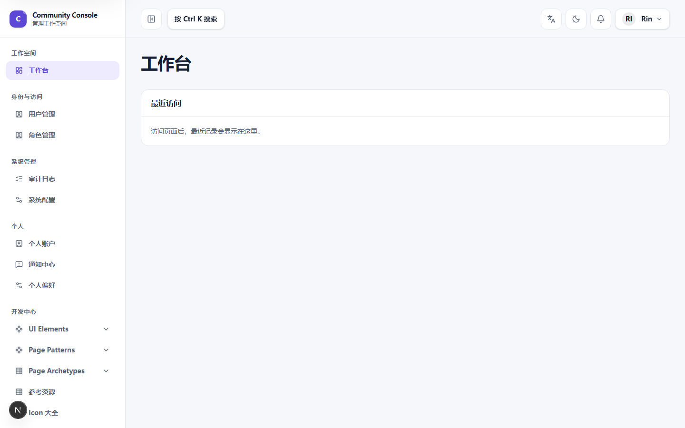
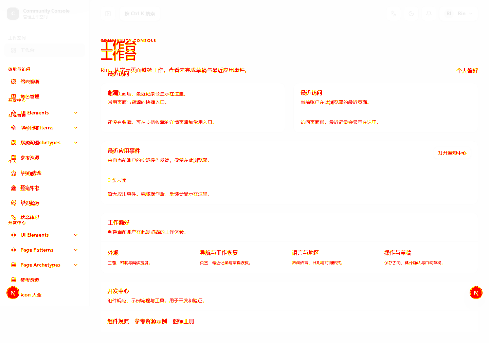
全量门禁发现该整页旧基线仍包含早期品牌与导航；当前图呈现已认可的品牌、管理入口与分组。九个 Family 内容区基线均通过。只申请更新这一项整页基线，阈值不变。
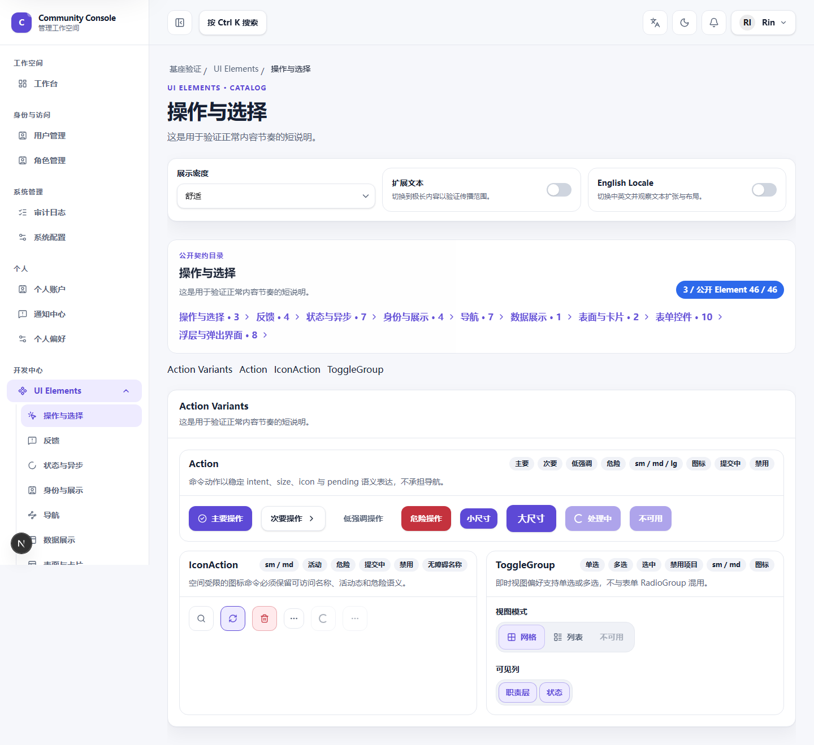
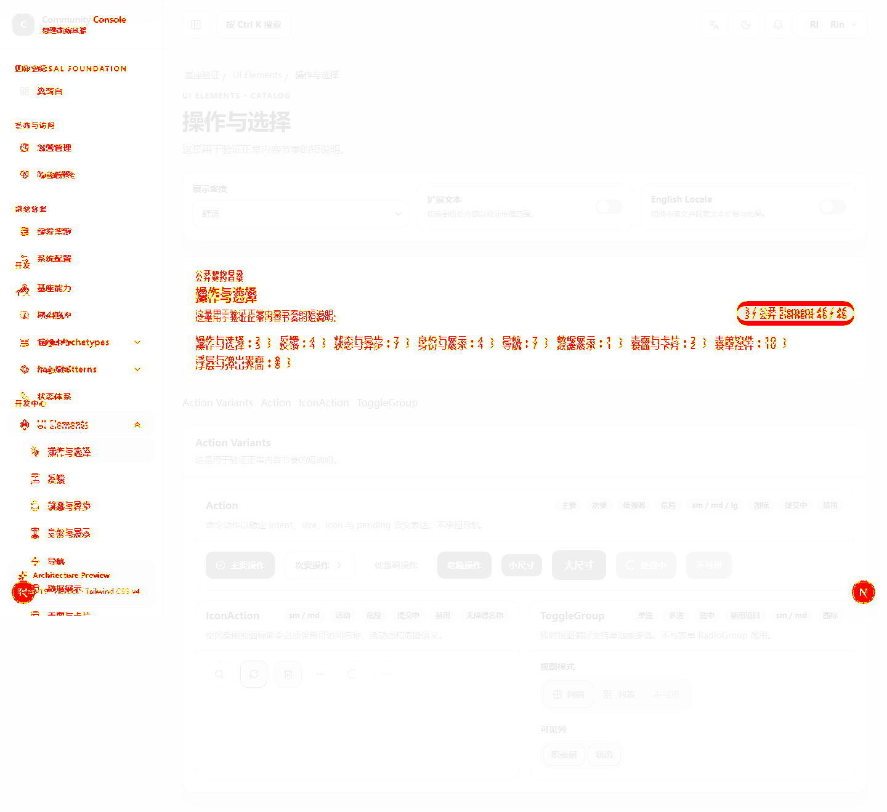